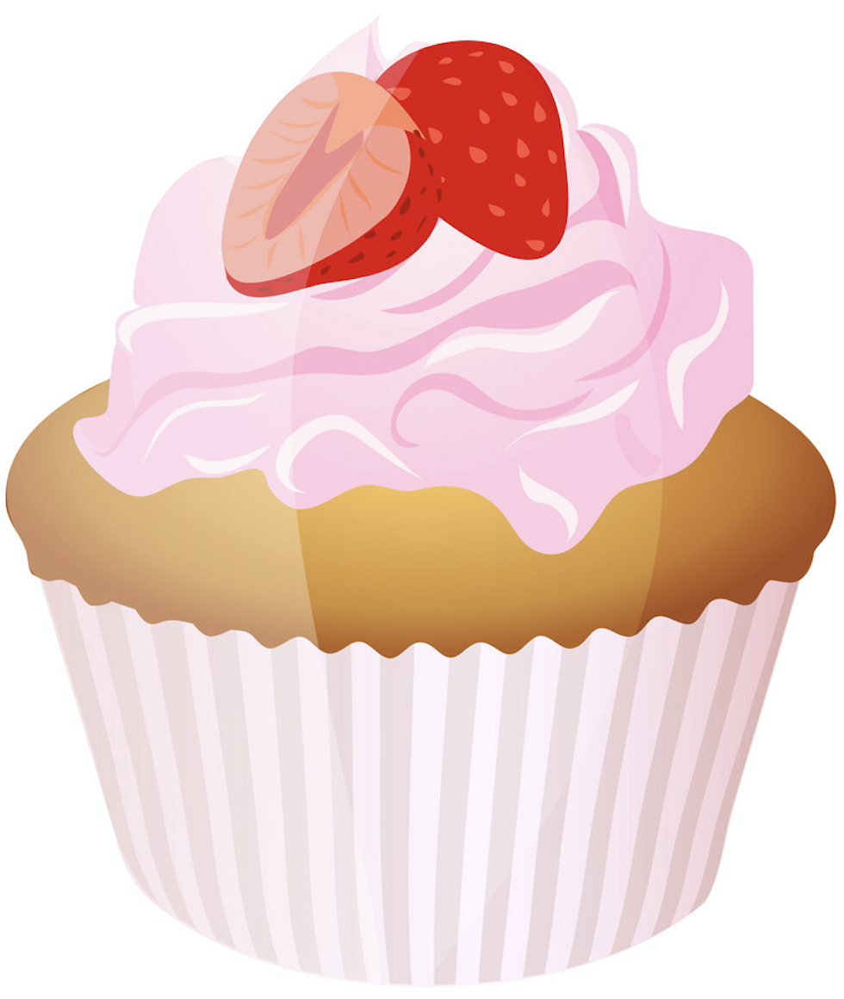

History of Cupcakes
Originally, cupcakes were baked in heavy pottery cups. Some bakers still use individual ramekins, small coffee
mugs, large tea cups, or other small ovenproof pottery-type dishes for baking cupcakes.
Cupcakes are usually baked in muffin tins. These pans are most often made from metal, with or without a
non-stick surface, and generally have six or twelve depressions or "cups". They may also be made from stoneware,
silicone rubber, or other materials. A standard size cup is 3 inches (76 mm) in diameter and holds about 4
ounces (110 g), although pans for both miniature and jumbo size cupcakes exist.[18] Specialty pans may offer
many different sizes and shapes.
Cupcakes may be plain cakes without any frosting or other decoration. These were baked on a flat baking sheet in
a double layer of paper cupcake liners.
Individual patty cases, or cupcake liners, may be used in baking. These are typically round sheets of thin paper
pressed into a round, fluted cup shape. Liners can facilitate the easy removal of the cupcake from the tin after
baking, keep the cupcake more moist, and reduce the effort needed to clean the pan. The use of liners is also
considered a more sanitary option when cupcakes are being passed from hand to hand. Like cupcake pans, several
sizes of paper liners are available, from miniature to jumbo.
In addition to paper, cupcake liners may be made from very thin aluminum foil or, in a non-disposable version,
silicone rubber. Because they can stand up on their own, foil and silicone liners can also be used on a flat
baking sheet, which makes them popular among people who do not have a specialized muffin tin. Some of the
largest paper liners are not fluted and are made out of thicker paper, often rolled at the top edge for
additional strength, so that they can also stand independently for baking without a cupcake tin. Some bakers use
two or three thin paper liners, nested together, to simulate the strength of a single foil cup.
Liners, which are also called paper cases, come in a variety of sizes. Slightly different sizes are considered
"standard" in different countries. Miniature cases are commonly 27 to 30 millimetres (1.1 to 1.2 in) in diameter
at the base and 20 millimetres (0.79 in) tall. Standard-size cases range from 45 to 53 millimetres (1.8 to 2.1
in) in diameter at the base and are 30 to 35 millimetres (1.2 to 1.4 in) tall. Australian and Swedish bakers are
accustomed to taller paper cases with a larger diameter at the top than American and British bakers